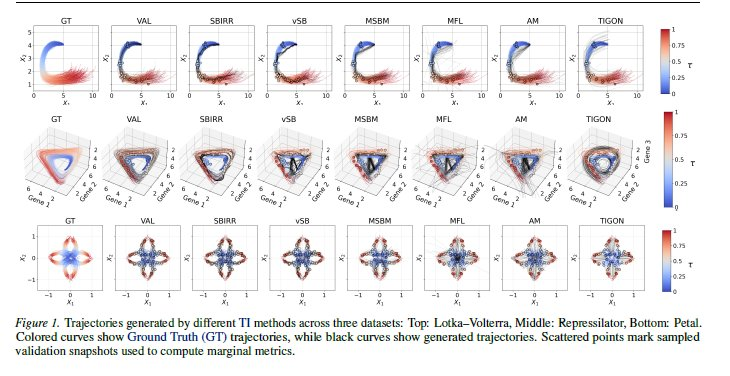
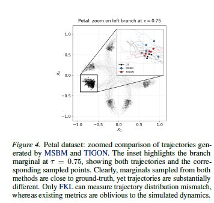
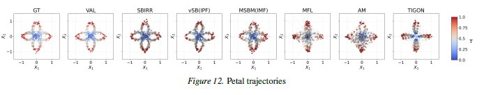
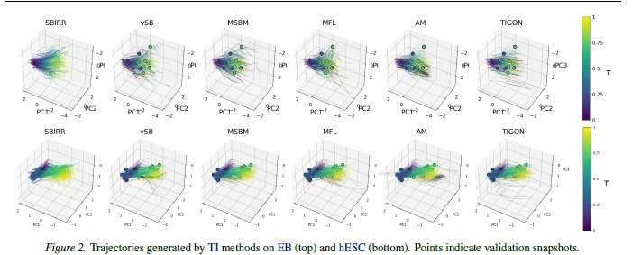

Six trajectory inference methods are benchmarked on three synthetic datasets and two real single-cell datasets. Five widely-used marginal metrics produce inconsistent, contradictory rankings across timepoints and metrics. FKL provides a single coherent ordering that aligns with visual inspection every time.
Six methods spanning the main families of trajectory inference:
Datasets: three synthetic (Lotka-Volterra predator-prey, Repressilator three-gene oscillator, Petal branching differentiation) where ground-truth trajectories are known; two real scRNA-seq datasets (Embryoid Body and Human Embryonic Stem Cell) where no ground truth exists.
Metrics: five marginal metrics at held-out timepoints — W₁ (EMD), W₂, Sliced Wasserstein (SWD), Max-Sliced Wasserstein (MWD), and MMD — plus forward and reverse FKL between full trajectory distributions.

Select a dataset, a metric, and a validation timepoint. Watch how the method rankings change — not just across datasets, but across different metrics on the same dataset at the same timepoint.
FKL produces stable rankings that align with visual inspection of the trajectories. Lower forward KL = distribution closer to the ground-truth path measure. The validation set (VAL) sets the baseline — it's resampled from the same process. The reverse KL reveals mode-seeking vs mode-covering behaviour: a large reverse KL means the method generates trajectories in regions the reference doesn't cover (mass outside the ground truth support).
The Petal dataset exposes the core problem most sharply. At τ = 0.75, TIGON scores better than MSBM on W₂ (0.155 vs 0.160) and clearly better on MMD (0.018 vs 0.057). Yet look at what their trajectories actually do:

MSBM correctly captures the branching structure — trajectories fan into distinct lineages. TIGON produces smooth, converging paths that land on the snapshot but miss the bifurcation entirely. W₂ and MMD rank TIGON as the winner. FKL (13.6 vs 36.5) correctly identifies MSBM.
Here are all method trajectories on the Petal dataset, directly from the paper:

On real scRNA-seq data, individual cells cannot be tracked — observations are independent samples at discrete timepoints only. FKL uses SBIRR (trained on all snapshots) as a reference, treating its stochastic differentiation dynamics as a plausible proxy for ground truth. FKL then measures how closely each other method recovers those dynamics.

vSB, MSBM, and MFL all score well under FKL — they share the same Schrödinger Bridge assumptions as the reference and generate similarly stochastic dynamics. Marginal metrics are also broadly consistent here.
TIGON ranks best at the first validation timepoint under every marginal metric. But FKL reveals the opposite: TIGON's ODE-based trajectories are too smooth, missing the stochasticity of real differentiation.